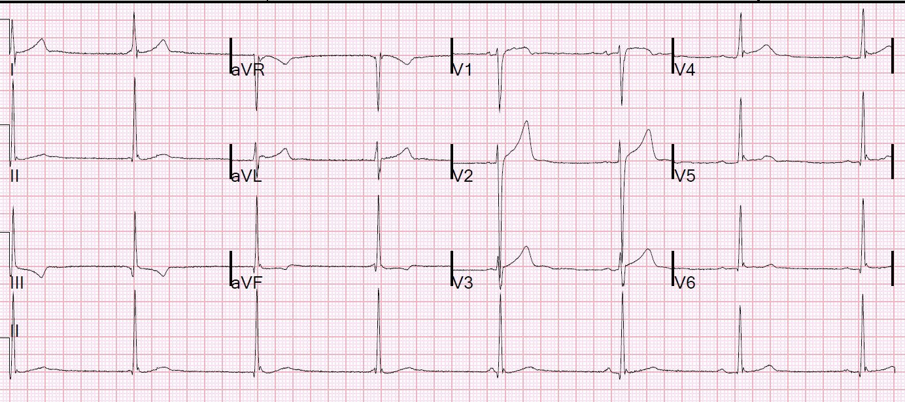
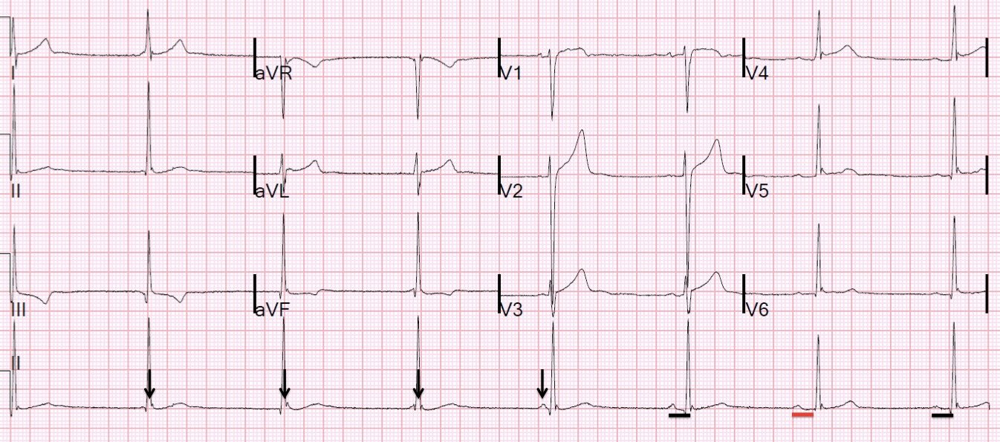
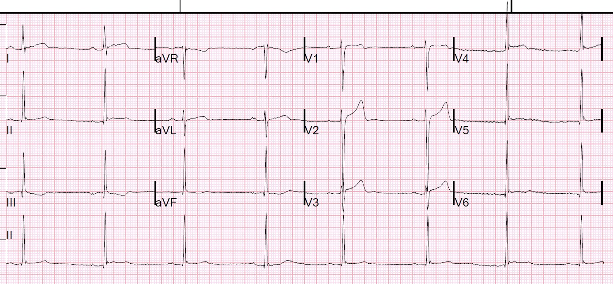

11/05/2018 — Một nam thanh niên choáng váng kèm nhịp chậm, và một nút AV “nóng vội”
Bản dịch tiếng Việt của bài "A young man with lightheadedness and bradycardia, and an impatient AV node." – Dr. Smith’s ECG Blog. Giữ nguyên toàn bộ 7 hình ảnh của bản gốc.
Một nam thanh niên 20 tuổi khỏe mạnh đến khám vì choáng váng (lightheadedness).
Tôi đã đăng ở cuối bài những bình luận rất hay của Ken Grauer và Jerry Jones.
Triệu chứng bắt đầu khoảng 2 tuần trước và xuất hiện khi gắng sức. Anh cho biết mình chơi trong đội bóng rổ của trường đại học và nhận thấy trong 2 tuần qua, mỗi lần tập luyện cùng đội anh đều cảm thấy choáng váng.
Không có tiền sử ngất thực sự. Anh không kèm đau ngực, khó thở hay hồi hộp đánh trống ngực. Anh không có triệu chứng lúc nghỉ hay khi thay đổi tư thế. Trước đây chưa từng có triệu chứng tương tự. Không có tiền sử bệnh tim hay bệnh phổi. Không có tiền sử gia đình về bệnh tim, đột tử, chết đuối, điếc. Anh không dùng thuốc nào.
Đây là điện tâm đồ của anh:


Các bác sĩ điều trị chẩn đoán blốc AV hoàn toàn.
Có nhịp chậm QRS hẹp với tần số khoảng 42. Khó xác định có sóng P đứng trước phức bộ đầu tiên hay không, vì phức bộ đó nằm ở mép bản ghi.
Phức bộ thứ 2 chắc chắn KHÔNG có sóng P đứng trước, phức bộ thứ 3 và thứ 4 cũng vậy. Tuy nhiên, phức bộ thứ 5 có một sóng P, theo sau rất sớm (dưới 120 ms) là một QRS. Phức bộ thứ 6 có khoảng PR dài hơn một chút, còn phức bộ thứ 7 và thứ 8 thì dài hơn nữa.
Khoảng PR dài nhất là ở phức bộ thứ 7.
Đây là nhịp gì? Có blốc AV không?
Không! Ít nhất là chúng ta không thấy bằng chứng nào của blốc ở đây. Không có sóng P nào không được dẫn truyền. Đây là phân ly nhĩ thất (AV dissociation). Nhưng không phải mọi phân ly nhĩ thất đều do blốc AV. Trong ca này, đó là “phân ly nhĩ thất đồng nhịp” (Isorhythmic Dissociation). Nút xoang và nút AV tình cờ phát xung với cùng một tần số, và cũng trùng hợp là xảy ra gần như đúng cùng một thời điểm.
Nút AV quá “nóng vội”, không chịu chờ nhát xoang được dẫn truyền xuống.
Hãy xem lại điện tâm đồ này kèm chú thích:


Ngoài nhịp ra, điện tâm đồ hoàn toàn bình thường đối với một nam thanh niên, kèm tái cực sớm (xem các sóng J kinh điển ở II, aVF, V4-V6)
Có thể có blốc AV không? Có, điều đó có thể, và chúng ta không thể bác bỏ blốc AV dựa trên điện tâm đồ này. Nhưng chúng ta không có lý do gì để nghĩ rằng có blốc AV.
Nếu nút AV đang phát xung, tại sao không có sóng P ngược dòng? Vì nút xoang phát xung trước khi xung động từ bên dưới kịp lên tới tâm nhĩ. Xung động đi lên từ nút AV gặp xung động đi xuống từ nút xoang và chúng blốc lẫn nhau.
Làm thế nào để chứng minh không có blốc AV? Chỉ cần cho bệnh nhân gắng sức một chút để tăng tần số xoang lên nhanh hơn tần số của nút AV.
Một điện tâm đồ khác được ghi sau đó tại khoa cấp cứu (ED):


Điều này cho thấy các sóng J đúng là sóng J, chứ không phải sóng P ẩn
Diễn biến lâm sàng:
Bệnh nhân được nhập viện vì lo ngại blốc AV hoàn toàn từng lúc.
Nghiệm pháp đi bộ (walk test) cho thấy nút xoang đáp ứng phù hợp, với dẫn truyền AV tốt.
Siêu âm tim bình thường.
Điểm cần học:
1. Blốc AV hoàn toàn chỉ là một trong các nguyên nhân gây phân ly nhĩ thất. Phân ly đồng nhịp là một nguyên nhân khác.
2. Phân ly đồng nhịp là một tình trạng lành tính.
Đây là một bài viết rất hay về phân ly nhĩ thất:
https://emedicine.medscape.com/article/151715-overview (bài tổng quan về phân ly nhĩ thất trên Medscape)
Đây là một bài viết hay về phân ly đồng nhịp:
http://circ.ahajournals.org/content/circulationaha/42/4/689.full.pdf
Đây là một ví dụ hay về phân ly đồng nhịp kèm giản đồ bậc thang (laddergram):
https://www.ecgguru.com/ecg/isorhythmic-v-dissociation (ví dụ về phân ly nhĩ thất đồng nhịp trên ECG Guru)
Dưới đây là các ví dụ khác về phân ly đồng nhịp:
Sudden weakness with bradycardia and bizarre T-waves (Yếu đột ngột kèm nhịp chậm và sóng T kỳ dị)
What is this rhythm? (Đây là nhịp gì?)
AV Dissociation. Is there AV block? (Phân ly nhĩ thất. Có blốc AV không?)
Dưới đây là các bài khác về phân ly nhĩ thất và blốc AV
AV Dissociation Lecture by K. Wang (28 minutes) (Bài giảng về phân ly nhĩ thất của K. Wang)
A Mystery Rhythm, Explained by K. Wang’s Ladder Diagram. (Một nhịp bí ẩn, được giải thích bằng giản đồ bậc thang của K. Wang.)
Another Guest post from K. Wang: What is the rhythm/conduction problem? (Một bài khách mời khác của K. Wang: Đây là vấn đề về nhịp/dẫn truyền gì?)
What Kind of AV Block is This? Guest Post by Dr. K. Wang (The Rhythm Master), Using a Ladder Diagram (Đây là loại blốc AV nào? Bài khách mời của Dr. K. Wang – “Bậc thầy về nhịp”, sử dụng giản đồ bậc thang)
Atrial Flutter. What else?? (AV dissociation with block) (Cuồng nhĩ. Còn gì nữa?? – phân ly nhĩ thất kèm blốc)
Những bình luận rất hay của Jerry Jones và Ken Grauer:

Steve…
Ca bệnh tuyệt vời! Trong các lớp học của mình, tôi nhấn mạnh việc nhận ra sự khác biệt giữa blốc AV độ 3 và phân ly nhĩ thất đơn thuần, vì ý nghĩa cũng như việc thăm dò và điều trị kéo theo khác nhau rất nhiều. Thật đáng tiếc khi có quá nhiều người đọc điện tâm đồ nghĩ rằng blốc AV độ 3 được định nghĩa bằng phân ly nhĩ thất (rõ ràng là không phải vậy!).
Tôi không đồng ý với câu “Không có sóng P nào không được dẫn truyền.” Thực ra, chỉ có một sóng P được dẫn truyền (nhát bắt được) và nó tạo ra khoảng R-R hơi ngắn hơn ở gần cuối. Tôi nghĩ cách diễn đạt tốt hơn cho câu này sẽ là “không có sóng P nào không được dẫn truyền mà lại không có lý do rõ ràng cho việc không được dẫn truyền.” Tất cả sóng P, trừ một sóng, đều đến nút AV hoặc bó His trong thời kỳ trơ hiệu quả. Như anh đã biết rõ, không phải phân ly nhĩ thất định nghĩa blốc AV độ 3 – mà chính là việc một sóng P không được dẫn truyền khi không có lý do gì để nó KHÔNG được dẫn truyền.
Đây đúng là phân ly đồng nhịp, nhưng đôi khi nó được gọi là phân ly do giao thoa (dissociation by interference) (hai loại còn lại là phân ly do mặc định (default) và do chiếm quyền (usurpation)). Điều bất thường ở đây là tần số nhĩ hơi nhanh hơn tần số thất, vốn là tình huống thường gặp trong blốc AV độ 3. Tuy nhiên, bạn vẫn có thể gặp điều này trong phân ly nhĩ thất loại giao thoa. Vì vậy, câu châm ngôn cũ rằng “nếu tần số nhĩ nhanh hơn tần số thất thì chắc chắn là blốc AV độ 3” đơn giản là không phải lúc nào cũng đúng.
Cảm ơn anh vì một trang web rất bổ ích và mang tính giáo dục.
- ECG Interpretationngày 14 tháng Năm năm 2018 lúc 10:09 sáng Chào Jerry. Bản ghi này còn phức tạp hơn so với thoạt nhìn. Mặc dù ở điện tâm đồ thứ 1, tần số sóng P xoang nhanh hơn tần số thoát bộ nối ở gần cuối bản ghi — tôi tin rằng nhiều khả năng nó CHẬM HƠN trước vài nhát cuối này ở điện tâm đồ thứ 1. Khi so sánh kỹ hình thái QRS của các nhát thoát, tôi thấy gợi ý rằng có một sóng P xoang xuất hiện ngay trước khởi đầu QRS của nhát #4; và ngay sau QRS của nhát #3. Tôi nghĩ chỗ khía hơi nhô cao ở cuối QRS của nhát #2 là do sự xuất hiện của một sóng P xoang, điều này (nếu tôi đúng) sẽ cho thấy tần số xoang thực sự CHẬM HƠN tần số thoát bộ nối ở đoạn đầu của bản ghi. Cần lưu ý — hình thái sóng P đứng trước nhát cuối cùng ( = nhát #8) trong điện tâm đồ thứ 1 này khác (tức là dẹt hơn) so với các sóng P xoang — mà tôi tin là do một nhịp nhĩ thấp chiếm quyền. Tôi tin giả thuyết này được củng cố bởi điện tâm đồ thứ 2, trong đó hình thái sóng P ở dải chuyển đạo II dài khác hẳn (dẹt hơn và có khía) so với hình thái các sóng P xoang ở điện tâm đồ thứ 1. Vì vậy, như tôi đã gợi ý trong Bình luận trước đó của mình (ngày 12 tháng Năm) — tôi nghĩ nhịp nền trong ca này là nhịp chậm xoang rõ rệt + loạn nhịp xoang — dẫn đến việc vị trí ổ tạo nhịp chuyển đổi giữa HOẶC một ổ thoát nút AV với tần số 42/phút HOẶC một nhịp thoát nhĩ thấp. Điều còn cần chứng minh (đã được nêu, nhưng chưa được ghi nhận bằng tư liệu trong phần trình bày ban đầu) — là liệu có hay không có đáp ứng phù hợp với gắng sức ở chàng thanh niên 20 tuổi trước đây khỏe mạnh này, người đã thực sự đến khám với triệu chứng “choáng váng” khi gắng sức (điều mà dĩ nhiên là không “bình thường” ở một người 20 tuổi). CẢM ƠN anh như mọi khi vì những bình luận sâu sắc! Tôi nghĩ đây là một ca TUYỆT VỜI để thảo luận!
Jerry Jonesngày 16 tháng Năm năm 2018 lúc 5:26 chiều
Chào Ken! Luôn vui khi được nghe anh chia sẻ và nhận ý kiến của anh. Tôi đồng ý rằng đây là một bản ghi rất phức tạp nhưng tôi muốn tránh suy diễn quá nhiều. Tôi nghĩ anh hoàn toàn đúng khi cho rằng đây là nhịp chậm xoang kèm loạn nhịp xoang đã bị một ổ tạo nhịp bộ nối chiếm quyền, nhiều khả năng xuất phát từ bó His hơn là từ nút AV hay vùng chuyển tiếp nút–His (NH). Trong khi nhịp nhanh nhĩ lạc chỗ khu trú không quá hiếm gặp, thì nhịp thoát nhĩ lại rất, rất hiếm gặp – chủ yếu vì bất kỳ yếu tố nào (có lẽ là tác động phó giao cảm) gây ra nhịp chậm xoang thì hầu như luôn có cùng tác động lên các vùng của tâm nhĩ có hoạt động tạo nhịp thoát. Một ổ tạo nhịp bộ nối ở bó His sẽ bị ảnh hưởng rất ít – nếu có. Về sự dẫn truyền của các xung động xoang (hoặc nhĩ), sau khi xem lại bản ghi đầu tiên, tôi nghĩ có lập luận rất vững rằng chỉ hai sóng P cuối cùng được dẫn truyền và chúng thậm chí có thể là sóng P' (chắc chắn sóng cuối cùng là như vậy, như anh đã chỉ ra). Tôi không nghĩ sóng P thứ 3 tính từ cuối được dẫn truyền vì – khi dùng compa đo – QRS theo sau nó đến đúng lúc theo nhịp thoát bộ nối. Thêm vào đó, mặc dù khoảng PR là 0,20 giây, đó không phải là đủ thời gian để nút AV này dẫn truyền. Hai khoảng PR cuối cùng dài hơn 0,20 giây một cách rõ ràng và các khoảng PR ở điện tâm đồ cuối cùng cũng vậy. Có hai loại khoảng PR “bình thường”: bình thường theo sách giáo khoa (0,12 – 0,20 giây) và bất cứ giá trị nào là “bình thường” đối với chính bệnh nhân đó. Hai phức bộ QRS cuối cùng chắc chắn lệch nhịp so với nhịp bộ nối, nên tôi nghĩ chúng đã được dẫn truyền. Để nói rằng QRS thứ 3 tính từ cuối được dẫn truyền, người ta sẽ phải dựa vào sự trùng hợp, và tôi luôn cố tránh viện dẫn phép màu, sự can thiệp của thần thánh và sự trùng hợp để giải thích một rối loạn nhịp. Phải thừa nhận rằng điều này đôi khi có thể khó khăn!
ECG Interpretationngày 20 tháng Năm năm 2018 lúc 3:40 chiều
Chào Jerry. Cảm ơn bình luận bổ sung của anh. Chỉ để làm rõ — tôi chưa bao giờ nói (hay có ý ngụ ý) rằng nhát #5 được dẫn truyền — ngược lại, KHÔNG chỉ khoảng PR ngắn hơn, mà cả hình dạng QRS khác biệt của nhát #5 này (so với nhát #6 ĐƯỢC dẫn truyền, và có sóng R thấp hơn) cho thấy nhát #5 KHÔNG được dẫn truyền. Ý của tôi đơn giản là dù nhịp thoát nhĩ có hiếm gặp đến đâu trong bối cảnh này — sự thay đổi hình dạng sóng P ở nhát cuối cùng này (nhát #8) trong điện tâm đồ #1, cùng với chính hình dạng sóng P khác biệt này (nhỏ hơn, có khía) ở mỗi nhát được dẫn truyền trong bản ghi thứ 2, đối với tôi gợi ý rằng ngoài nhịp thoát bộ nối — còn có cả một nhịp thoát nhĩ đang xảy ra. Như tôi tin rằng cả hai chúng ta đều nghĩ vậy — cần theo dõi thêm để làm rõ điều này — và ý nghĩa lâm sàng của những gì chúng ta thấy chỉ được xác định khi chúng ta biết được liệu có hay không có đáp ứng phù hợp với gắng sức ở chàng thanh niên 20 tuổi trước đây khỏe mạnh này, người đã thực sự đến khám với triệu chứng “choáng váng” khi gắng sức. CẢM ƠN anh như mọi khi vì những suy nghĩ của anh!